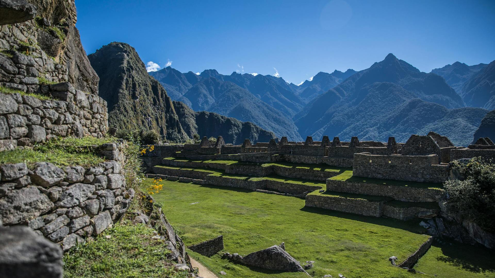

Machu Picchu

Maču Pikču, esantis aukštai Andų kalnuose Peru, yra įrodymas apie inkų civilizacijos genialumą. XV a. pastatytas miestas buvo imperatoriaus Pačakutio karališkoji rezidencija ir religinis centras. Miesto architektūra apima žemės ūkio terasas, gyvenamuosius rajonus ir ceremonines erdves, kurios harmoningai dera su natūralia aplinka. 1911 m. Hiram Bingham atrastas Maču Pikču yra UNESCO pasaulio paveldo objektas ir vienas lankomiausių pasaulio turizmo objektų.